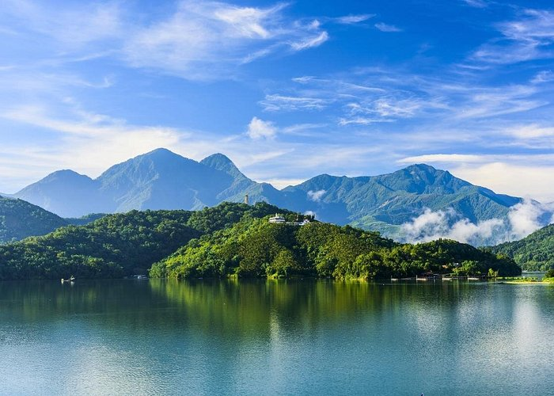
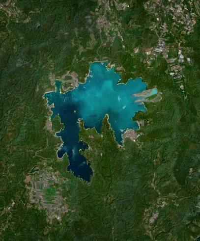
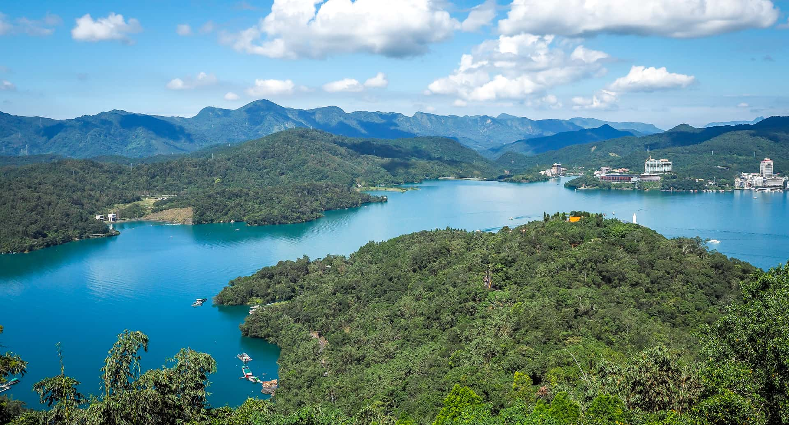

- Region
- Central · Nantou County
- Difficulty
- Easy
- Time needed
- 1–2 days
- Best months
- Oct–Dec, Mar–Apr
What to do
Cycle the lakeside paths
Rent a bike near Shuishe (水社) or Xiangshan (向山) and ride the lakeshore paths. Even a short section gives great views.
Hop between piers by boat
Boats link Shuishe, Xuanguang (玄光) and Ita Thao (伊達邵) piers. It is the easiest way to see the lake from the water.
Ride the Sun Moon Lake Ropeway
The cable car from Ita Thao rises over the hills to the Formosan Aboriginal Culture Village, with wide lake views.
Climb to Ci'en Pagoda
A forest trail leads up to Ci'en Pagoda (慈恩塔), the highest viewpoint around the lake.
Visit Wenwu Temple
Wenwu Temple (文武廟) sits on the north shore with big stone lions and a terrace facing the lake.
What to eat
Ita Thao street food 伊達邵老街
The old street at Ita Thao has Thao and other Indigenous-style snacks, such as grilled mountain pork and millet treats.
Black tea 紅茶
The area is known for black tea, including the Red Jade variety (紅玉). Try it hot or as a tea drink.
Tea eggs at Xuanguang Pier 香菇茶葉蛋
Eggs simmered with tea and mushrooms, sold near Xuanguang Temple, are a classic stop.
Lake fish 總統魚
Local restaurants serve freshwater fish from the lake, often steamed.
Getting there
- From Taipei Main Station, take the High Speed Rail (HSR) to Taichung (台中) station. about 1 h
- Take the Nantou Bus 6670 (Taiwan Tourist Shuttle) from the HSR station bus area to Sun Moon Lake (Shuishe). about 1.5 h
- Get around the lake by boat, bike, the round-the-lake bus, or the ropeway. —
Look for combined passes that bundle the bus, boat and ropeway; they usually save money if you use all three.
Best season
Autumn and spring are mild and comfortable for cycling. Many events, such as the fireworks and cycling festivals, are held in autumn. Summer is hot with afternoon storms and typhoons. Winter mornings can be beautifully misty over the water.
Photos



Tips
- Stay one night if you can; early morning and evening are the quietest and most beautiful times.
- Check the last bus time back to Taichung before you start exploring.
- Bikes with electric assist make the hills much easier.
- The ropeway may close on windy days or for maintenance; check before you go.
Last checked: 2026-11. Bus routes, train times and opening hours change, so please confirm on official websites before you go.